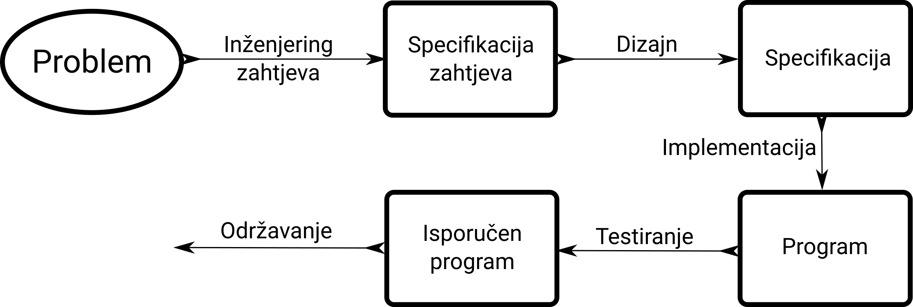
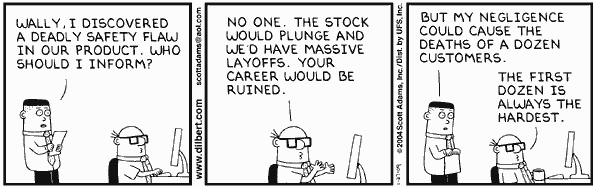

Software Engineering Programsko inženjerstvo
Izv.prof.dr.sc. Irena Galić
Hrvoje Leventić
Predavanje 1a
Uvod u programsko inženjerstvo
Sadržaj
- Što je programsko inženjerstvo
- Zašto programsko inženjerstvo
- Faze u razvoju softverskih projekata
- Primjeri propalih projekata
- Etika softverskog inženjerstva
Softver nekada i danas
Nekada
- Prva računala pojavila su se 1950-ih
- Mali programi koje su pisali i koristili eksperti
- Najčešće pisani od strane jedne osobe
- Ulaz - bušene kartice, izlaz - papir
- Radili su off-line
- Softver se dijelio uz hardver
Danas
- Ogromni softverski projekti
- Višegodišnji projekti na kojima sudjeluje više timova
- Timovi rašireni po cijelom svijetu
- Programeri != korisnici
Softverska kriza
(Software Crisis)
...a term used in the early days of computing science for the difficulty of writing useful and efficient computer programs in the required time. The software crisis was due to the rapid increases in computer power and the complexity of the problems that could not be tackled.
With the increase in the complexity of the software, many software problems arose because existing methods were insufficient.
Source: Wikipedia - Software Crisis
Dijkstra o softverskoj krizi
The major cause of the software crisis is that the machines have become several orders of magnitude more powerful! To put it quite bluntly: as long as there were no machines, programming was no problem at all; when we had a few weak computers, programming became a mild problem, and now we have gigantic computers, programming has become an equally gigantic problem.
Source: Edsger Dijkstra, The Humble Programmer (EWD340), Communications of the ACM
Softverska kriza
- Kriza se pojavila 1960-ih. Simptomi:
- Projekti probijaju budžete
- Projekti probijaju vremenska ograničenja
- Softver je bio vrlo neefikasan
- Softver je bio niske kvalitete
- Softver često nije ispunjavao zahtjeve
- Projekti teški za upravljanje i održavanje
- Softver često uopće nije bio isporučen (dovršen)
Softverska kriza
- Dvije NATO konferencije (1968. i 1969.)
- Pojam 'Software Engineering' tj. Programsko inženjerstvo
- Graditi softver kao što se grade kuće ili mostovi
Softver je skup
- ~US$140 milijardi u 1985.
- ~US$800 milijardi u 1998.
- Ukupan trošak = razvoj + održavanje
- Troškovi održavanja su često višestruko veći od razvoja
- Softver 80%, hardver 20%
Source: B. W. Boehm, Software Engineering, IEEE Transactions on Computers, 1976
Što je programsko inženjerstvo?
Software engineering is the establishment and use of sound engineering principles in order to obtain economically software that is reliable and works efficiently on real machines.
Source: First NATO conference Naur and Randell, 1968
Što je programsko inženjerstvo?
Software engineering is the application of a systematic, disciplined, quantifiable approach to the development, operation, and maintenance of software; that is, the application of engineering to software.
Source: IEEE Standard Glossary of Software Engineering Terminology, 1990
Programsko inženjerstvo bavi se metodama izrade velikih programa
Veliki vs. mali
- programming-in-the-large
- Projekti na kojima sudjeluje više ljudi (ili čak timova)
- Duži vremenski razvoj (>6 mjeseci)
- programming-in-the-small
- Mali programi
- Razvija ih jedna osoba u kratkom vremenu
Primjeri velikih projekata
-
NASA Space Shuttle software
40M LOC -
Linux Kernel
15M LOC
https://unix.stackexchange.com/questions/223746/why-is-the-linux-kernel-15-million-lines-of-code - IBM OS360
5000 čovjek-godina razvoja
Tradicionalne tehnike
- Tradicionalne programske tehnike podržavaju programming-in-the-small
- Programski jezici
- Alati (npr. dijagrami toka)
- Metode (npr. strukturno programiranje)
- Ne mogu se direktno primjeniti na velike projekte
- Današnji softverski projekti su kombinacija velikog broja različitih programa i komponenti

Source: XKCD 1667
Not Invented Here (NIH) sindrom vs. Proudly Found Elsewhere (PFE) sindrom
Kada izmišljati toplu vodu, a kada koristiti tuđa rješenjaCilj programskog inženjerstva je upravljanje kompleksnošću
- Podijeliti problem u dijelove
- Komunikacija između dijelova mora biti jednostavna
- Kompleksnost često nije intrinsična problemu
Software evoluira
- Softver modelira stvarnost
- Stvarnost evoluira
- Softver mora evoluirati zajedno sa stvarnošću
- Troškovi rastu nakon isporuke softvera
Efikasnost razvoja je bitna
- Programsko inženjerstvo bavi se temama razvoja boljih, bržih i efikasnijih metoda razvoja i isporuke softvera.
- Ukupni troškovi razvoja softvera su veliki
- Postoji sve veća potreba za softverom
- Time-to-market
- Component reuse
Ljudi su bitni
- Suradnja među ljudima je bitan dio razvoja velikih softverskih projekata
- Veliki problemi na kojima velik broj ljudi radi istovremeno
- Timovi na različitim geografskim lokacijama
- Potrebne efikasne metode kolaboracije i komunikacije
- Alati!
Software postoji radi korisnika
It is not sufficient to build the system in the right way, we also have to build the right system.
Source: Software Engineering: Principles and Practice, Hans Van Vliet, 2007, Wiley
- Funkcionalnost softvera mora odgovarati zadacima korisnika
- Proučiti što korisnicima stvarno treba
- Odrediti ispravne funkcionalne zahtjeve
- Bitno: jednostavnost korištenja, kvaliteta, pouzdanost
- Nezadovoljstvo sustavom = zaobilaženje sustava
Healthcare workers prioritize helping people over information security
Source: https://boingboing.net/2016/06/28/healthcare-workers-prioritize.html
Problem domenske ekspertize
- Softverski inženjeri su eksperti u softveru
- Nisu eksperti u upravljanju knjižnicom, avijaciji ili bankarstvu
- Nedovoljno poznavanje domene za koju rade softver
- Nepoznavanje kulture domene za koju rade softver
Balansiranje zahtjeva
Programming today is a race between software engineers striving to build bigger and better idiot-proof programs, and the Universe trying to produce bigger and better idiots. So far, the Universe is winning.
Source: Rick Cook, The Wizardry Compiled, 1989
- Zahtjevi na početku projekta nisu jedini bitan faktor
- Korisnici često ne znaju što im zapravo treba
- Korisnici često ne znaju prioritetizirati zahtjeve
- Česta poslovna, politička i tehnička ograničenja
Software Engineering != Programming
- Programiranje je bitan dio inženjeringa softvera
- Ali nije jedini
- Matematički aspekti == ispravan proizvod
- Dobre inženjerske prakse == koristan proizvod
- Psihološki i sociološki aspekti
- Kontrola razvojnog procesa == Menadžment
Softver se razlikuje od fizičkih proizvoda
- Fizički proizvodi:
- Većina troškova tijekom proizvodnje
- Troše se zbog upotrebe i treba ih održavati
- Softver:
- Kopiranje softvera je trivijalno
- Ne troši se zbog upotrebe
- Većina troška je u fazi razvoja
- Održavanje softvera je potrebno zbog:
- Kasno otkrivenih grešaka
- Promjene korisničkih zahtjeva
- Promjena platforme (hardver ili OS)
We may even argue that software wears out because it is being maintained.
Source: Software Engineering: Principles and Practice, Hans Van Vliet, 2007, Wiley
Faze razvoja softvera
Model procesa razvoja softvera
Source: Software Engineering: Principles and Practice, Hans Van Vliet, 2007, Wiley
Inženjering zahtjeva
(Requirements Engineering)
- Prikupiti cjelovite podatke o problemu kojeg treba riješiti:
- Funkcionalnosti željenog softvera
- Moguće buduće nadogradnje
- Količina i tip dokumentacije
- Zahtjevi na performanse sustava
Inženjering zahtjeva
- Prikupiti cjelovite podatke o okruženju u kojem će sustav funkcionirati:
- Hardver
- Dodatan korišteni softver
- Broj korisnika
- Dodatna ograničenja zbog budućeg planiranog hardvera ili softvera
- Studija izvedivosti (engl. Feasibility Study)
- Specifikacija zahtjeva (engl. Requirements specification)
Dizajn
- Izrada modela cijelog sustava
- Rastav problema na komponente
- Precizna sučelja (engl. Interfaces) među komponentama
- Često se smatra dosadnim uvodom u programiranje
- Vrlo bitna faza - utječe na kvalitetu konačnog rješenja
- Globalan opis sustava - arhitektura sustava
- Što, a ne kako
- Rezultat faze je tehnička specifikacija sustava
Implementacija
- Tek sada počinje programiranje
- Razvoj pojedinačnih komponenti prema tehničkoj specifikaciji
- Zadatak programera - izraditi program koji je
- dokumentiran
- pouzdan
- ispravan
- fleksibilan
- Rezultat faze je izvršni program
Testiranje
- Pogrešno se navodi kao faza nakon implementacije
- Obratiti pažnju na testiranje tijekom svih faza
- Pogotovo tijekom implementacije
- Metode testiranja često utječu na samu implementaciju
- Verifikacija i validacija
Održavanje
- Ispravljanje grešaka koje su promakle tijekom faze implementacije
- Novi korisnički zahtjevi i nadogradnje
- Obuhvaća sve aktivnosti potrebne kako bi softver ostao funkcionalan nakon isporuke klijentu
Menadžment projekta
- Osigurava isporuku softvera na vrijeme i unutar zadanog budžeta
- Planiranje projekta
- Organizacija tima
- Scheduling
- Koordinacija svih faza projekta
Dokumentacija
Documentation is like sex; when it's good, it's very, very good, and when it's bad, it's better than nothing.
Source: Dick Brandon
- Često se zanemaruje
- Treba započeti u ranim fazama
- Vrlo je bitna tijekom održavanja
- Sistemska i korisnička dokumentacija
Održavanje ili evolucija
Computer science is the only discipline in which we view adding a new wing to a building as being maintenance.
Jim Horning
- Tijekom životnog vijeka softvera više novca se potroši na održavanje nego na početni razvoj
- 4 tipa aktivnosti održavanja softvera:
- Korektivno održavanje
- Adaptivno održavanje
- Perfektivno održavanje
- Preventivno održavanje
Horror priče
Ariane 5, Flight 501
Ariane 5, Flight 501
- Eksplodirala oko 40s nakon lansiranja, na visini od oko 3.5km
- 500M dolara štete
- Overflow pri konverziji 64-bit floata u 16-bit unsigned int
- Bug u softveru Inertial Reference Systema (SRI)
- Više kuteva gledanja
- Softverski problem - mogao se otkriti uz detaljnije testiranje
- Hardverski problem - korištenje neodgovarajuće komponente
- Problem dizajna - filozofija dizajna hardvera
Etika programskog inženjerstva
Software Engineering Code of Ethics
- IEEE Computer Society + ACM
- Link na dokument
- Osam glavnih principa
1. Public
Software engineers shall act consistently with the public interest
2. Client and employer
Software engineers shall act in a manner that is in the best interests of their client and employer consistent with the public interest
3. Product
Software engineers shall ensure that their products and related modifications meet the highest professional standards possible
4. Judgment
Software engineers shall maintain integrity and independence in their professional judgment
5. Management
Software engineering managers and leaders shall subscribe to and promote an ethical approach to the management of software development and maintenance
6. Profession
Software engineers shall advance the integrity and reputation of the profession consistent with the public interest
7. Colleagues
Software engineers shall be fair to and supportive of their colleagues
8. Self
Software engineers shall participate in lifelong learning regarding the practice of their profession and shall promote an ethical approach to the practice of the profession
Zaključak
- Veličina i cijena softverskih projekata kontinuirano raste
- Softverska kriza javila se zbog neadekvatnih metoda razvoja velikih softvera
- Programsko inženjerstvo bavi se istraživanjem boljih, bržih i efikasnijih metoda razvoja i isporuke softvera
- Nije isto što i programiranje, ali je programiranje bitan dio
- Uključuje i psihološke i sociološke aspekte
- Softverski inženjeri trebaju se ponašati etično
Background images attribution

Source: https://media.glassdoor.com/l/28/2d/5f/9c/open-space-office.jpg

Source: By United States Army (Image from [1]) [Public domain], via Wikimedia Commons}"